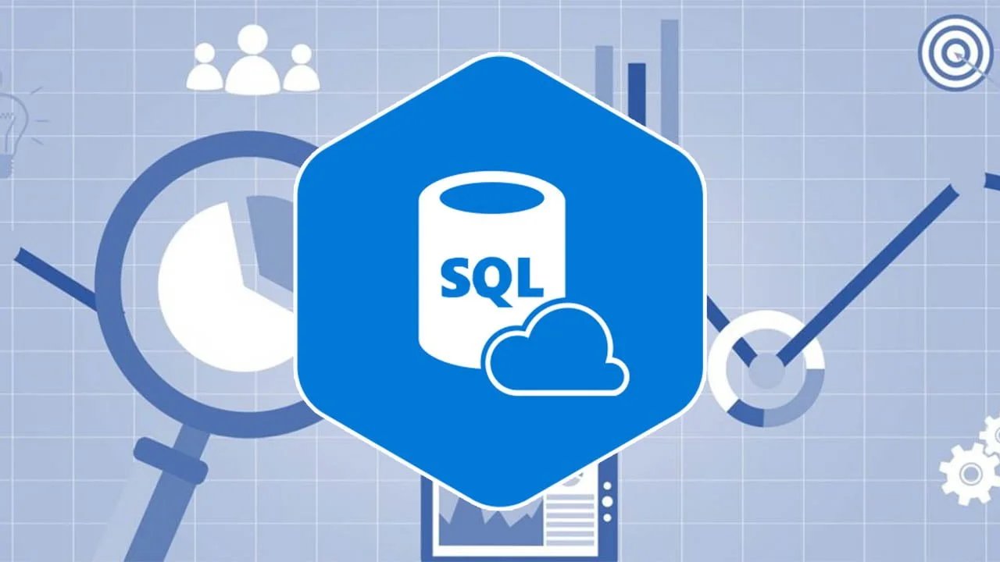

In this project, we conducted a comprehensive analysis of an e-commerce company specializing in the online retail of physical products. Our analysis addressed a range of critical business inquiries, both financial and marketing.

In this project, we will delve into data analysis at 'LearnData', a leading e-learning company specialized in offering online courses on data analysis.
We are data analysts and we want to analyze the labor market in these roles. For this we are obtaining data from the jobs listed on LinkedIn in areas of data analysis for different countries.
.png)
In this project, we were provided with a dataset containing CO2 production data categorized by country. With limited initial information about the dataset, our primary mission was to embark on an exploratory journey. Our first objective was to explore the dataset to gain insights into its structure, patterns and trends that lay within the data.
A client has hired us so that, by analyzing his sales records, we help him decide in which market he should carry out a marketing action to increase sales, whether in Germany or France.
"For this project, I leveraged the power of Python, utilizing key libraries such as pandas, numpy, requests, datetime, matplotlib.pyplot, seaborn, and os to efficiently handle data, make API requests, manage date and time, and create insightful visualizations."

Here are all the dashboards I have worked on in Power BI